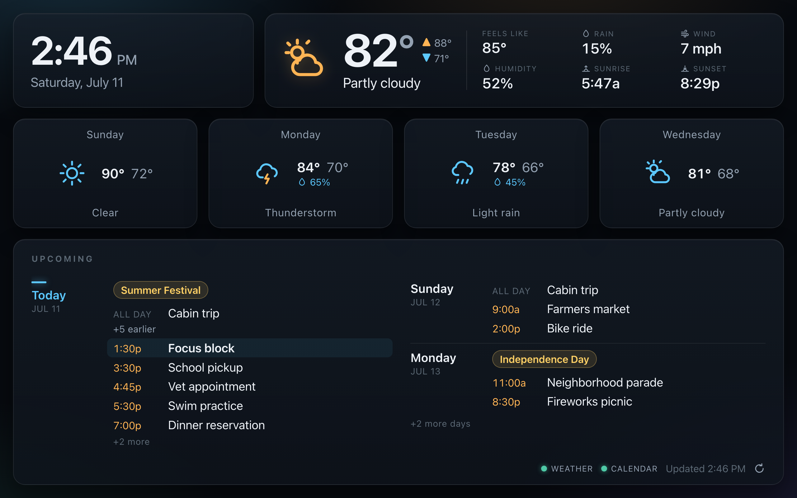
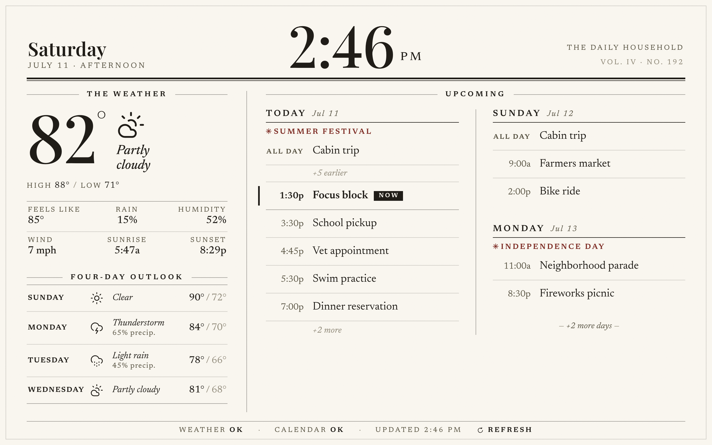
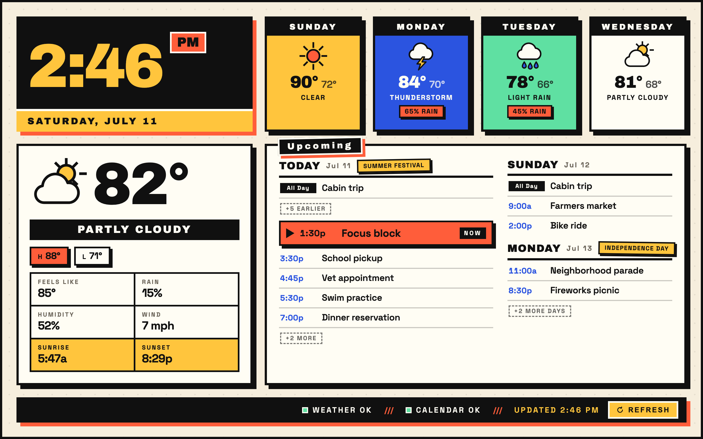
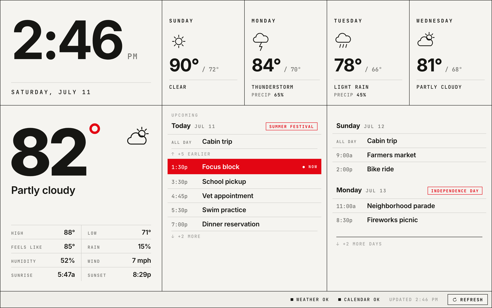
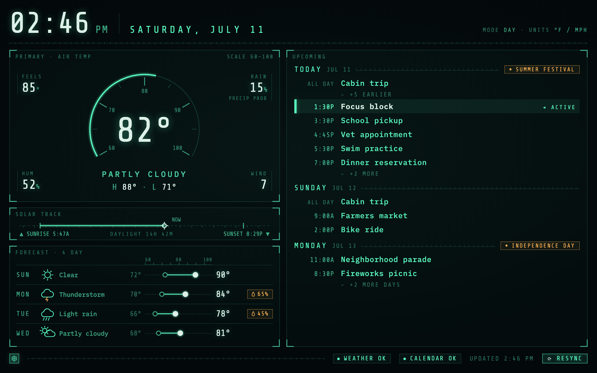
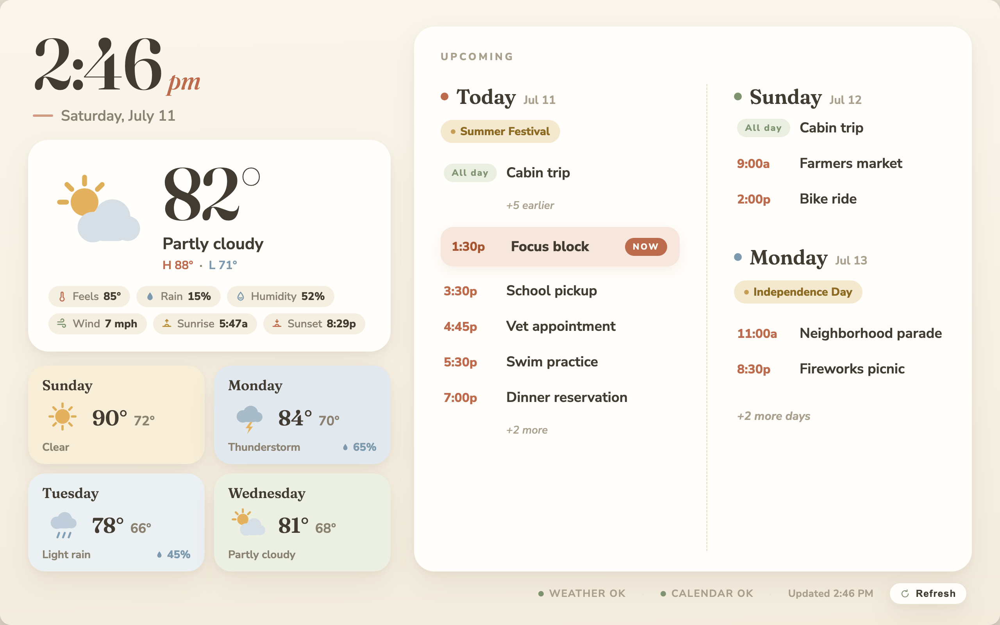

Layout mocks for the dashboard — one per candidate LAYOUT (the color THEME is a separate axis). Each is a self-contained HTML file at the 1280×800 kiosk viewport, sharing the CONTENT.md fixture. Click a title to open one.

classic
Dark glass bento cards over an ambient corner-glow canvas.

Warm-paper broadsheet: ink palette with one oxblood accent, Playfair / Newsreader serif.

Flat saturated panels, thick black borders, hard offset shadows, Archivo Black numerals.

Engineering-sheet modular grid, JetBrains Mono metadata, huge grotesque numerals, one Swiss-red accent.

hud
Green-phosphor instrument cluster: temp dial, solar day-tape, channel-row forecast.

Linen canvas, Fraunces display type, muted sage / terracotta / dusty-blue palette.